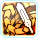
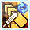
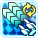
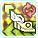
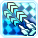
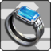
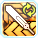

Hero is the first scion class released for PSO2. It requires you to have two classes at 75+, and unlocks the ability to become a Hero on any character. Hero differs from most classes as it cannot take a subclass or be used as a subclass. It uses Swords, Twin Machine Guns, and Talises as it's main weapons. However, it uses them in all new and creative ways. Let's go over them real quick.
 Sword: Sword is generally the same (you swing it, but with one hand now!), but actions are much faster. Your sword weapon action fires a blast from your hand that can be charged up (and adds AOE damage).
Sword: Sword is generally the same (you swing it, but with one hand now!), but actions are much faster. Your sword weapon action fires a blast from your hand that can be charged up (and adds AOE damage).
Twin Machine Gun: Your normal attack and PAs both use PP. However, your weapon action skill generates PP insanely fast as you hold it down (faster if you Perfect Attack it). You can also step (hit the dodge button) and hit a Perfect Attack reload repeatedly to build it slightly faster. The later would be useful, for example, in combat situations where you need to dodge a lot.
Talis: Instead of casting techs with them, you throw the
If you hold the weapon action, you can throw the talis, then tap the weapon action button again to teleport to where it was thrown.
The Hero class can also use techniques! Hero's PAs are also much simpler than the original classes - You have them all at the start, and they cannot be leveled up or crafted. No more hunting down level 17 disks!
Hero's main focus is kind of like playing a Devil May Cry or a Bayonetta game - You want to mix up your PAs and combos to increase your focus, as doing the same move over and over will build it much more slowly. You also want to avoid getting hit, as taking more than 20% of your HP in damage will reset Heroic Boost, which can be stacked up to a 80% attack boost. In order to do this, we'll need to learn the basic combos for each weapon first.
Sword Combo 1
Rising Slash (The full combo, so throw -> slash -> slam) twice -> Normal Attack (This will do the third part of the normal attack) -> Repeat
This is your "boss that loves to stand still" combo. You could just hold down Rising Slash, but that does less damage and generates a lot less gear, so it's a bad idea (and is the trademark thing that people who don't know how to play Hero do!)
Sword Combo 2
Bulletblitz twice -> Normal Attack -> Repeat
This is your combo for things that are moving constantly until they sit in place so you can smack them with the first combo.
Twin Machine Gun
Use Sleightshot Gambit. That's literally it.
Always be on the lookout for moments of downtime where you can reload to gain tons of PP back.
Talis
Edgeracer Gambit twice -> Normal Attack (3rd part). Houndblade is a Damage Over Time skill - You'll want to substitute it for Edgeracer Gambit whenever it stop hurting the enemy. For example, if we notice it falls off, we'd do Houndblade -> Edgeracer Gambit once -> Normal Attack (3rd part), then go back to the Normal Edgeracer Gambit twice -> Normal Attack (3rd part) until it falls off again. (As shown in the video above)
Make sure you're applying Houndblade whenever possible - It provides very useful extra damage and builds Hero time quite quickly. The damage of Houndblade changes based on the current weapon's main attack power - If your sword/TMG are more powerful than your talis, put the DoT on the enemy and then switch to a weapon with higher attack to do more damage with it. You shouldn't bother putting Houndblade on an enemy with low HP, though.
By using certain PAs, you can optionally swap weapons midcombat (much faster than swapping them manually!). PAs that do this have a small red, yellow, or blue icon on them. Red means they swap to sword, yellow means talis, and blue means TMG. They will swap to the first weapon of that type, starting from the top of your weapon pallete, if you hold down the PA button while using it. You can still use the PA and not swap, just don't hold down the PA button.
Hero also has a unique mechanic - Counters! It essentially has the same timing as Braver counter and Perfect Guarding, but you dodge instead of blocking. Dodging an attack at the right moment makes a unique noise, and lets you press the normal attack button to do a damaging counterattack. Countering also greatly increases your Heroic boost percent (but not beyond its max).
For TMGs, there is a special PA called Starfire Squall that increases it's damage exponentially if used as a counterattack. It does significantly more damage than the sword counter and is something to seriously consider doing if you're fighting an enemy that you know you will be countering often (soloing bosses, for example).
Please keep in mind that my TMGs (1819 ATK) are significantly weaker than my Sword (2569 ATK), and yet the damage with the TMG Counter + Starfire Squall is much higher still. Assuming that all hits are crits on both weapons, we have 262,000 damage with sword counter, versus 40,000*12 (480,000) to 40,000*16 (640,000) with TMG. It's pretty crazy.
Countering also increases your Heroic Boost percent (but not beyond its max) and increases your focus, which brings us to another important part of Hero - building focus!
Your main objective as a Hero (while looking cool and stylish) is to build focus for your Hero Time by countering, avoiding damage, and using different skills. There is a gauge at the center of your subpallete, and once it fills you can activate HERO TIME!
Once activated, your power increases by the number of hits you do while it is active (big brain strat is to use TMG's Sleightshot Gambit PA twice to max it, then switch back to Sword). Your PP is also fully restored. Press it again (once your Hero Time is about to run out) to do a Hero Time Finish, whose gigantic damage is based upon how many hits you did and what weapon (Sword, TMG, or Talis) you have out when you activate it. You are also invulnerable during the Hero Time Finish.
You can also use half of your gauge to activate Hero Refresh - This consumes half of your gauge to recover HP, PP, and reset Hero Will. You cannot do a Hero Time Finish when you use Hero Refresh.
Jump cancelling is the process of letting you use Sword and TMG PAs much faster than normal. In the combo videos above, you see me do the attacks normally. However, if we put jump cancelling into the process for TMGs, for example:
You can fit a lot more PAs into the same time window. Jump cancelling is also semi-dependent on the Hero skill "Hero Encore Jump", so that you can do jump cancels over and over by jumping off the enemy. You can also cancel the 3rd sword normal with a jump, instead of waiting for the Perfect Attack window, and let the Hero skill "First Blood" take care of empowering the next PA. It's much faster than waiting for the Perfect Attack window.
You can also jump cancel from afar by barely jumping, using a TMG PA, then repeating this process, as seen below:
Mobbing
If someone (you?) casts Zondeel (or someone uses the Nifta mag), you can Rising Slash entire groups of enemies all at once. If not, then you should use Brightblade Buster (Sword) for all your AOE. You can also just use sword normals if low damage will kill them, since the normal attacks on sword have some range. You could also use Final Storm (TMG), but the AOE is much smaller (but can be more powerful if you manage to get headshots on everything).
Skill Tree
A typical Hero skill tree can be found by checking the PSO2NA Class Builds Compilation. Remember that percentage multipliers are always better than straight additions, so a 5% increase to something will almost always be better than doing +5 to it.
Skills
Hero has some skills that every Hero should be using and have on their subpallete.
- Heroic Boost: At max level, this increases the damage you deal by 1% per second of not taking damage, up to 60%.
- Hero Counter: Dodging an attack at the right moment makes a unique noise, and lets you press the attack button to do a damaging counterattack. This also increases your Heroic boost percent (but not beyond its max).
- Hero Time: You activate this skill when your focus is maxed, and your power increases by the number of hits you do while it is active (big brain strat is to use TMG's Sleightshot Gambit PA twice to max it, then switch back to sword). Your PP is also fully restored. Press it again to do a Hero Time Finish, whose gigantic damage is based upon how many hits you did and what weapon you have out when you activate it. You are also invulnerable during the Hero Time Finish.
- Hero Will: When something would kill you, it doesn't. Simple, yet awesome. Only works once per quest unless reset by Hero Refresh.
- Hero Refresh: Similar to Hero time, but consumes half of your gauge to recover HP, PP, and reset Hero Will. Cannot be used to do Hero Time Finish.
- Victory Shout: Recovers PP based on the number of enemies around you. Also increases your threat level (aggro), very useful for making enemies attack you instead of towers or other defensible objects.
Rings
Left Rings
 Atomizer Fanatic: Speeds up the consumption animation of Moon/Sol/Star Atomizers and increases their recovery rate.
Atomizer Fanatic: Speeds up the consumption animation of Moon/Sol/Star Atomizers and increases their recovery rate.
- Party Toughness: Reduces damage taken based on the number of players in your Party. Does nothing if you're solo.
- Leaping Dodge: Gives you a active skill that lets you jump super high.
- Mag Excitement: Increases the power of your Mag's Auto Action and reduces its cooldown.
You can slot 3 of these into units, then just wear the last one as a normal ring.
Right Rings
- Perfectionist (Combo Ring): Gives an extra 3% damage to all 3 attack stats while you remain over 75% healed (at level 20)
 Critical Strike (Combo Ring): Increases your crit power for all 3 attack stats by 3% and your crit rate for all 3 stats by 20% (at level 20)
Critical Strike (Combo Ring): Increases your crit power for all 3 attack stats by 3% and your crit rate for all 3 stats by 20% (at level 20)
This one is really up to you, either one works.
Techniques
Hero can use techniques, and some of them are highly recommended for certain situations.
- Resta: Heals you and the people around you.
- Megiverse: Generates a field that heals anyone in it when they inflict damage on enemies.
- Anti: Cures status effects for you and the people around you.
- Zondeel: Used to pull enemies from the surrounding area into one spot so you can kill them all at once. It's recommended that you also craft this to make its range wider.
 Zanverse: Generates a field of wind around you and makes you and everyone around you deal bonus wind damage. Free damage!
Zanverse: Generates a field of wind around you and makes you and everyone around you deal bonus wind damage. Free damage!
Mag
Your Mag's total attack stats (Melee, Range, and Tech) are added up and then distributed evenly to all three stats - So it doesn't matter which kind of attack mag you're using (as long as it has all it's points in attack!).
Affixes
Ideally, you'll want to have stat boosts in all attack types (Melee, Range, and Tech), since you'll typically be using all 3 weapons.
Movement skills
Like other classes, Hero has some skills that people can use to move rapidly as opposed to just running. Gotta go fast!
- Trickflash (Sword PA): Lunges forward with your sword, good for movement but doesn't change your altitude.
- Crafted Safoie /C (Technique): Moves forward but also changes your altitude so you can hit enemies in the air or weak spots above the ground level.
 Ilzonde (Technique): Moves forward and through enemies, does not change altitude.
Ilzonde (Technique): Moves forward and through enemies, does not change altitude.
Why do some people SPEAK IN ALL CAPS WHEN TALKING ABOUT HERO?
- Keep an eye out for downtime opportunities/when bosses turn invuln, so you can use TMG Reload to get your PP back fast or precharge a weapon action.
- If there's no techter in the party, casting a Zanverse before using Hero Time Finish is a good idea (if possible).
- Remember to take advantage of Hero Time and Hero Refresh, as well as executing Hero Finish while Heroic Boost and Hero Time’s attack bonus are at their peak.
- Always seek Hero Counter opportunities to deal high damage while evading attacks.
- Remz for teaching me how to be a pro Hero
- airoh. for letting me steal their layout for the initial version of this guide
- Advisors on Phantasy Star Fleet for advice/information
- Ashinror and their old Hero guide
- Arks Visiphone for icons and data
- And you!
Thank you for playing!
October 31st, 2020
Added code so that you can toggle between NA/JP terms. No more hovering!
September 26nd, 2020
Added a bit about step TMG reload and fixed some other issues. Four days left!
September 23rd, 2020
Added counters, focus, and tons of other stuff.
The guide is now available for public consumption!
September 22nd, 2020
Added rings, videos, improved layout, etc etc etc
September 21th, 2020
Added a bunch of stuff about Hero, videos, etc.
September 19th, 2020
Realized there was no vetted Hero guide. Panik! I stole airoh's Summoner guide layout for the moment, will be customizing it and working on the guide as time goes on. Thank you, airoh.